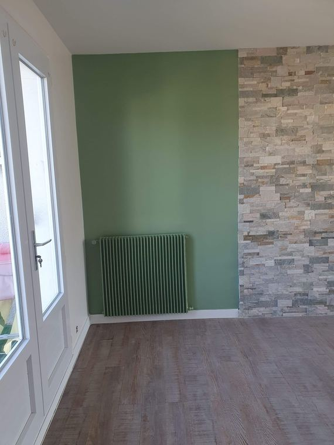
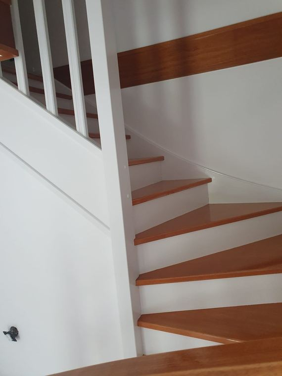

Prestations / Peinture intérieure
Peinture intérieure
Ce qui fait la différence sur un chantier de peinture, ce n'est pas la couche de finition. C'est ce qu'il y a dessous.

Ce que nous réalisons
Murs, plafonds, boiseries
Du rafraîchissement à la remise à neuf
- Murs et plafonds : rebouchage, ratissage, ponçage, impression et deux couches de finition.
- Boiseries et menuiseries : portes, plinthes, encadrements, garde-corps, radiateurs.
- Moulures, corniches et rosaces, au pinceau, sans noyer le relief sous l'épaisseur.
- Laque satinée ou brillante sur menuiseries, avec ponçage entre couches.
- Traitement des fissures de plâtre et des reprises après dégât des eaux.
Nous travaillons essentiellement sur du bâti ancien parisien. Les murs ne sont jamais droits, le plâtre a cent ans, et un plafond à moulures ne se traite pas comme un plafond neuf. C'est ce qui détermine la méthode et le temps passé.


Notre méthode
L'essentiel se joue avant la finition
La préparation, c'est l'essentiel du travail
Un mur mal préparé se voit à la première lumière rasante. C'est le poste que les devis les moins chers sacrifient, et c'est celui qui détermine si votre peinture tient trois ans ou quinze.
Selon l'état du support, nous rebouchons, ponçons, ratissons et appliquons une impression adaptée. Sur du plâtre ancien, sur un mur qui a porté du papier peint pendant trente ans ou sur une cloison neuve, ce ne sont ni les mêmes produits ni les mêmes durées.
Les sols et le mobilier sont bâchés avant le premier coup de pinceau. Les locaux sont rangés chaque soir. Nous utilisons des peintures à faible teneur en COV, ce qui permet de rester chez soi pendant les travaux.
Prix indicatifs
Fourchettes 2026, Paris et proche couronne
Combien ça coûte
| Prestation | Prix HT |
|---|---|
| Murs et plafonds, support sain, impression et 2 couches | 30 à 40 €/m² |
| Support à reprendre, rebouchage, ratissage, dépose de papier peint | 40 à 58 €/m² |
| Plafond seul | 34 à 48 €/m² |
| Moulures, corniches et rosaces | 45 à 90 €/ml |
| Boiseries et menuiseries, porte 2 faces et chants | 120 à 190 €/unité |
| Laque satinée sur menuiseries, ponçage entre couches | 150 à 250 €/unité |
Exemple : une chambre de 12 m² sur support sain, murs et plafond, à partir de 1 200 € HT. Un appartement parisien de 60 m² entièrement repeint, 5 000 à 8 500 € HT.
Prix indicatifs, hors fourniture lorsque précisé. TVA à 10 % pour les logements achevés depuis plus de deux ans. Chaque chantier fait l'objet d'un devis détaillé après visite technique gratuite.
Questions fréquentes
4 réponses
Questions fréquentes
Combien de temps pour repeindre un appartement de 60 m² ?
Une à deux semaines selon l'état des supports et le nombre de pièces, hors séchage des enduits de reprise.
Faut-il que je vide les pièces ?
Pas entièrement. Nous demandons que les petits objets, les rideaux et les cadres soient retirés. Nous déplaçons et protégeons le mobilier lourd.
Peut-on peindre sur du papier peint ?
Parfois, si l'adhérence est bonne et le motif peu marqué. Le plus souvent la dépose est préférable et le résultat n'a rien à voir. Nous tranchons à la visite.
Mes murs sont fissurés, est-ce grave ?
Une microfissure de plâtre se traite au calicot ou à l'enduit armé. Une fissure large, évolutive ou traversante relève de la structure : nous vous le dirons plutôt que de la masquer.
Voir aussi : papier peint · peintures décoratives · façades
Passer à l'action
Réponse sous 24 h
Parlons de votre projet
Visite technique gratuite, devis détaillé sous 48 heures, dans l'est parisien et à Paris.